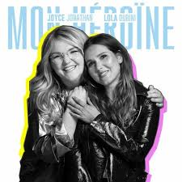

 Être une femme, être mille Se créer toutes ses nuances Être une fille, pas facile De vivre sa vie sous influence Être viril, c'est oser Passer pour un garçon manqué Être aimée, l'accepter Et ne plus jamais regretter Et si je ne suis pas la meilleure Que pour certains j'en fais trop Je n'suis pas une erreur Je n'y laisserai jamais ma peau Je serai mon héroïne Battante jusqu'à la fin du film Une force qui surmonte Les imbéciles de tous les contes Je porterai mes idées sur le monde Je serai mon héroïne Vivante jusqu'à la fin du film Une femme qui affronte Et qui n'aura plus jamais honte Je porterai mes idées sur le monde Être aphone, à parler Des heures durant des soirées Être sûre, être soi Jamais se laisser insulter Être une fille, être une meuf Être plutôt trop que pas assez Être vivante, attachante Et accepter son passé Je ne serai toujours pas la meilleure Pour certains j'en ferai toujours trop Je n'suis pas une erreur Et j'y laisserai jamais ma peau